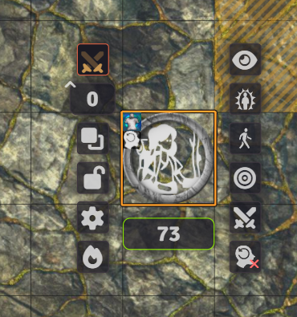

Foundry / Misc
Character setup, sheet and chat shortcuts, and tools for configuring automation in Foundry VTT.
Module Integrations
- Automated Conditions 5e combines supported feature and effect rules when determining Advantage and Disadvantage.
- Dice So Nice! lets players see their dice finish before the next step. Switching away releases that client’s animation wait.
Both modules are required. See compatibility and requirements.
Create Player
Use Create Player in the Actors directory for guided level-one setup. Choose Standard Array or Point Buy, then select class, background, species, equipment, and spells from the world’s enabled Compendium Sources.
To resume, right-click an owned character and select Continue Character Creator Wizard.
Spell Lists
On standard D&D5e and Tidy sheets, Add Spell opens class-filtered compendium results. Select several spells and add them together.
Eligible Clerics and Druids can use Load Unprepared Spells to fill in missing leveled class spells. Existing spells and preparation choices are preserved.
Module Options
Open Configure Settings → Ugmuls 5.5e Automation → Open Module Options. Search by name or class, toggle individual automations, or use Reaction Triggers to manage when chat cards pause.
The Spell and Region Manager and Creature Effect Triggers let GMs review built-in recipes, adjust them for their world, or restore defaults.
Effect Cleanup
Choose Clear inactive effects from the actor window menu to preview and remove old applied effects. Active effects and disabled class or item features are preserved. GMs can also enable cleanup after combat.
Chat & Sheet Shortcuts
- Attack cards can hide repeated controls while retaining dice, linked results, and Undo history.
- Chat scrolling can jump to the latest messages when you open Chat. Chat follows new reaction choices and pending damage until you scroll away.
- Add Item opens the relevant Compendium Browser tab from supported inventory and spell sections.
End Concentration from the Token HUD
Right-click the token and choose End Concentration. The GM or token owner can confirm the change, which also clears linked Regions and their managed effects.
